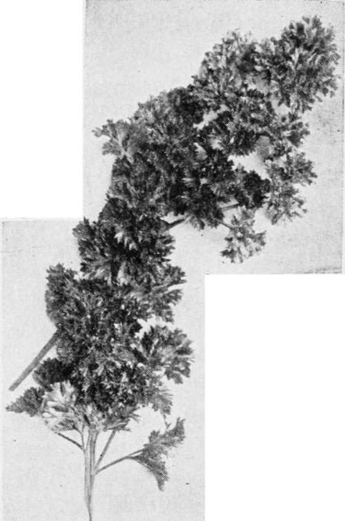

Parsley
Description
This section is from the book "Culinary Herbs", by M. G. Kains. Also available from Amazon: Culinary Herbs, Their Cultivation, Harvesting, Curing and Uses.
Parsley
Parsley (Carum Petroselinum, Linn.), a hardy biennial herb of the natural order Umbelliferae, native to Mediterranean shores, and cultivated for at least 2,000 years. The specific name is derived from the habitat of the plant, which naturally grows among rocks, the Greek word for which is petros. Many of the ancient writings contain references to it, and some give directions for its cultivation. The writings of the old herbalists of the 15th century show that in their times it had already developed several well-defined forms and numerous varieties, always a sure sign that a plant is popular. Throughout the world today it is unquestionably the most widely grown of all garden herbs, and has the largest number of varieties. In moist, moderately cool climates, it may be found wild as a weed, but nowhere has it become a pest.
" Ah ! the green parsley, the thriving tufts of dill; These again shall rise, shall live the coming year."
-Moschus
Description
Like most biennials, parsley develops only a rosette of leaves during the first year. These leaves are dark green, long stalked and divided two or three times into ovate, wedge-shaped segments, and each division either entire, as in parsnip, or more or less finely cut or "curled." During the second season the erect, branched, channeled flower stems rise 2 feet or more high, and at their extremities bear umbels of little greenish flowers. The fruits or "seeds" are light brown or gray, convex on one side and flat on the other two, the convex side marked with fine ribs. They retain their germinating power for three years. An interesting fact, observed by Palladius in 210 A. D., is that old seed germinates more freely than freshly gathered seed.
Curled Parsley
Cultivation
Parsley is so easily grown that no garden, and indeed no household, need be without it. After once passing the infant stage no difficulty need be experienced. It will thrive in any ordinary soil and will do well in a window box with only a moderate amount of light, and that not even direct sunshine. Gardeners often grow it beneath benches in greenhouses, where it gets only small amounts of light. No one need hesitate to plant it.
The seed is very slow in germinating, often requiring four to six weeks unless soaked before sowing. A full day's soaking in tepid water is none too long to wake up the germs. The drills may be made in a cold frame during March or in the open ground during April.
It is essential that parsley be sown very early in order to germinate at all. If sown late, it may possibly not get enough moisture to sprout, and if so it will fail completely. When sown in cold frames or beds for transplanting, the rows may be only 3 or 4 inches apart, though it is perhaps better, when such distances are chosen, to sow each alternate row to forcing radishes, which will have been marketed by the time the parsley seedlings appear. In the open ground the drills should be 12 to 15 inches apart, and the seed planted somewhat deeper and farther apart than in the presumably betterprepared seedbed or cold frame. One inch between seeds is none too little.
In field culture and at the distances mentioned six or seven pounds of seed will be needed for the acre. For cultivation on a smaller scale an ounce may be found sufficient for 50 to 100 feet of drill. This quantity should be enough for any ordinary-sized family. In all open ground culture the radish is the parsley's best friend, because it not only marks the rows, and thus helps early cultivation, but the radishes break, loosen and shade the soil and thus aid the parsley plants.
When the first thinning is done during May, the parsley plants may be allowed to stand 2 inches asunder. When they begin to crowd at this distance each second plant may be removed and sold. Four to six little plants make a bunch. The roots are left on. This thinning will not only aid the remaining plants, but should bring enough revenue to pay the cost, perhaps even a little more. The first cutting of leaves from plants of field-sown seed should be ready by midsummer, but as noted below it is usually best to practice the method that will hasten maturity and thus catch the best price. A "bunch" is about the amount that can be grasped between the thumb and the first finger, 10 to 15 stalks.
It is usual to divide the field into three parts so as to have a succession of cuttings. About three weeks are required for a new crop of leaves to grow and mature after the plants have been cut. Larger yields can be secured by cutting only the fully matured leaves, allowing the others to remain and develop for later cuttings. Three or four times as much can be gathered from a given area in this way. All plain leaves of such plants injure the appearance and reduce the price of the bunches when offered for sale.
If protected from frost, the plants will yield all winter. They may be easily transplanted in cold frames. These should be placed in some warm, sheltered spot and the plants set in them 4 by 6 inches. Mats or shutters will be needed in only the coldest weather. Half a dozen to a dozen stalks make the usual bunch and retail for 2 or 3 cents.
In the home garden, parsley may be sown as an edging for flower beds and borders. For such purpose it is best to sow the seed thickly during late October or November in double rows close together, say 3 or 4 inches. Sown at that time, the plants may be expected to appear earlier than if spring sown and to form a ribbon of verdure which will remain green not only all the growing season, but well into winter if desired. It is best, however, to dig them up in the fall and re-sow for the year succeeding.
For window culture, all that is needed is a box filled with rich soil. The roots may be dug in the fall and planted in the box. A sunny window is best, but any window will do. If space is at a premium, a nail keg may be made to yield a large amount of leaves. Not only may the tops be filled with plants, but the sides also. Holes should be bored in the staves about 4 inches apart.
Continue to: